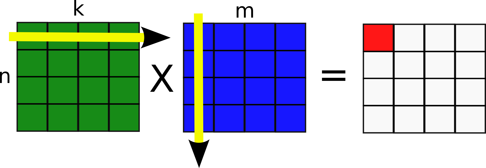

In Class Discussion
Program and Data Structure Patterns - Matrix Multiplication
Objective: To identify and exploit parallelism in large matrix multiplicationParallel Matrix Multiplication
Multiplication of matrices is a fundamental and widely used Level-3 BLAS operation. It is an O($n^3$) operation and hence large matrix multiplications can be very time consuming. There are optimized libraries which perform fast, efficient matmul. However, multiplication of large matrices still presents a challenge. Hence it is necessary to parallelize this operation.

Exercises
- There are a number of ways to parallelize this computation. With the three design spaces in mind (Finding Concurrency, Algorithm Structure, Program and Data Structure), consider how to exploit the parallelism in this problem.
- Maximizing the performance is one of the main goals of parallelization. Which approach is likely to give the best performance for this problem?
- Sometimes critical information about the problem and the target systems such as matrix dimensions, number and type of processing elements may not be known. Consider the pitfalls of your approach under such circumstances. How would you design a robust solution which is portable with respect to these factors?
* Image taken from http://cnx.org/contents/2410c436-8d31-47e9-9fae-a6d81300f6c0@4/Practical-2---Compiler-Optimiz